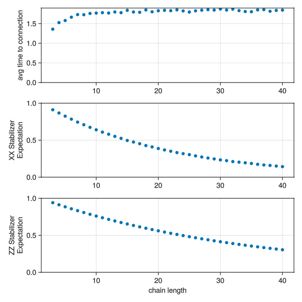

A Study of Congestions over a Repeater Chain
A simple example to study congestion on a chain of quantum repeaters.
Each node in the chain holds a small number of qubits, and three kinds of processes compete for them: an entangler generating raw Bell pairs between neighbors, a swapper extending those pairs into longer-range links, and a consumer draining finished end-to-end pairs. Because every register only has a handful of slots, these processes get in each other's way — entanglement piles up faster than it can be swapped and consumed. The goal of this how-to is to measure how that congestion grows as the chain gets longer.
This is a very low-level implementation. You would be better of using already implemented reusable protocols like EntanglerProt and SwapperProt, together with the tagging and querying system for tracking classical metadata. On the other hand, the setup here is a simple way to learn about making discrete event simulations without depending on a lot of extra library functionality and opaque black boxes.
Below we embed a live version of the simulation (hosted at areweentangledyet.com/congestionchain/):
The dashboard above shows the chain on the left and the quality of the consumed end-to-end pairs (the XX and ZZ stabilizer expectations) on the right:
The source code is in the examples/congestionchain folder. All of the base functionality lives in setup.jl, while the three numbered scripts run it in different circumstances:
1_visualization.jl— runs a single Monte Carlo simulation of one chain with a live dashboard (the video above);2_makie_interactive.jl— wraps that into an interactive web app;3_aggregate_of_multiple_simulations.jl— runs many simulations across a range of chain lengths and plots the averaged statistics.
This example is a close cousin of the low-level first-generation repeater; if you want a more detailed walkthrough of the same hand-written entangler/swapper machinery, that page goes deeper.
Network Setup
The chain is a linear graph of length registers, each holding regsize qubits, all with the same T2Dephasing background. simulation_setup builds the RegisterNet and attaches, on every node, an :enttrackers array recording which remote qubit (if any) each local qubit is entangled with — the classical bookkeeping that the ProtocolZoo's tag system would otherwise handle for you:
function simulation_setup(length, regsize, T2; representation = QuantumOpticsRepr)
registers = [Register([Qubit() for _ in 1:regsize],
[representation() for _ in 1:regsize],
[T2Dephasing(T2) for _ in 1:regsize]) for _ in 1:length]
network = RegisterNet(grid([length]), registers)
sim = get_time_tracker(network)
for v in vertices(network)
network[v,:enttrackers] = Any[nothing for i in 1:length]
end
sim, network
endThe raw Bell pair shared by the entangler is a ready-made noisy state from StatesZoo, the DepolarizedBellPair parametrized by a single fidelity F:
noisy_pair_func(F) = DepolarizedBellPair(; F)Unlike the color-center example, which builds its noisy Bell state by hand, here we reuse a predefined state from StatesZoo and (below) a predefined swap circuit from CircuitZoo. The "low-level" part of this example is the hand-written processes and bookkeeping, not the quantum states or circuits.
Entangler
One entangler runs on every edge. It repeatedly looks for a free qubit on each endpoint, locks them, waits an exponentially-distributed time to model the probabilistic entangling attempt, writes the noisy Bell pair into the two slots, and records the link in both nodes' :enttrackers:
@resumable function entangler(sim, network, nodea, nodeb, noisy_pair,
entangler_wait_time, entangler_busy_λ)
while true
ia = findfreequbit(network, nodea; constraint=:odd)
ib = findfreequbit(network, nodeb; constraint=:even)
if isnothing(ia) || isnothing(ib)
@yield timeout(sim, entangler_wait_time) # all slots busy — back off and retry
continue
end
slota = network[nodea,ia]; slotb = network[nodeb,ib]
@yield request(slota) & request(slotb)
@yield timeout(sim, rand(Exponential(entangler_busy_λ)))
initialize!((network[nodea][ia], network[nodeb][ib]), noisy_pair; time=now(sim))
network[nodea,:enttrackers][ia] = (node=nodeb, slot=ib)
network[nodeb,:enttrackers][ib] = (node=nodea, slot=ia)
unlock(slota); unlock(slotb)
end
endThe constraint=:odd/:even restriction makes each node reserve one half of its slots for links to its left neighbor and the other half for links to its right, which is a simple way to avoid one direction starving the other. When no free slot is available the process simply waits entangler_wait_time and retries — this back-off loop is exactly where congestion shows up.
Swapper
One swapper runs on every node. It looks for a qubit entangled with some node to its left and another entangled with some node to its right, and fuses the two short links into one longer link with a Bell measurement:
@resumable function swapper(sim, network, node, swapper_wait_time, swapper_busy_time)
while true
qubit_pair = findswapablequbits(network, node)
if isnothing(qubit_pair)
@yield timeout(sim, swapper_wait_time)
continue
end
q1, q2 = qubit_pair
@yield request(network[node][q1]) & request(network[node][q2])
@yield timeout(sim, swapper_busy_time)
# bring the four involved qubits up to the current time, then swap
uptotime!((reg[q1], reg1[node1.slot], reg[q2], reg2[node2.slot]), now(sim))
swapcircuit(reg[q1], reg1[node1.slot], reg[q2], reg2[node2.slot])
# rewrite the bookkeeping so the two remote endpoints now point at each other
network[node1.node,:enttrackers][node1.slot] = node2
network[node2.node,:enttrackers][node2.slot] = node1
network[node,:enttrackers][q1] = nothing
network[node,:enttrackers][q2] = nothing
unlock(network[node][q1]); unlock(network[node][q2])
end
end
swapcircuit = EntanglementSwap() # from QuantumSavory.CircuitZoofindswapablequbits always picks the farthest available neighbor on each side, so each swap extends the link as much as possible. The actual quantum operation is the predefined EntanglementSwap circuit from CircuitZoo; the uptotime! call first advances the four qubits' states to the present so the accumulated T2 dephasing is applied before the swap.
Consumer
One consumer sits at the two ends of the chain, draining finished end-to-end pairs. For each consumed pair it records how long it had to wait since the previous one (the time to connection, the headline congestion metric) and the pair's XX and ZZ stabilizer expectations (its quality), then traces the qubits out so the slots can be reused:
@resumable function consumer(sim, network, node1, node2, consume_wait_time,
timelog, fidelityXXlog, fidelityZZlog)
last_success = 0.0
while true
qubit_pair = findconsumablequbits(network, node1, node2)
if isnothing(qubit_pair)
@yield timeout(sim, consume_wait_time)
continue
end
q1, q2 = qubit_pair
@yield request(reg1[q1]) & request(reg2[q2])
uptotime!((reg1[q1], reg2[q2]), now(sim))
push!(fidelityXXlog[], real(observable((reg1[q1],reg2[q2]), XX; something=0.0, time=now(sim))))
push!(fidelityZZlog[], real(observable((reg1[q1],reg2[q2]), ZZ; something=0.0, time=now(sim))))
push!(timelog[], now(sim)-last_success)
last_success = now(sim)
traceout!(reg1[q1], reg2[q2])
network[node1,:enttrackers][q1] = nothing
network[node2,:enttrackers][q2] = nothing
unlock(reg1[q1]); unlock(reg2[q2])
end
endRunning the Simulation
1_visualization.jl wires the three processes together and runs a single chain, recording the dashboard video shown at the top of the page:
sim, network = simulation_setup(len, regsize, T2)
noisy_pair = noisy_pair_func(F)
for (;src, dst) in edges(network)
@process entangler(sim, network, src, dst, noisy_pair, entangler_wait_time, entangler_busy_λ)
end
for node in vertices(network)
@process swapper(sim, network, node, swapper_wait_time, swapper_busy_time)
end
@process consumer(sim, network, 1, len, consume_wait_time, ts, fidXX, fidZZ)
for t in range(0, 1000, step=0.1)
run(sim, t)
endThe visualization combines registernetplot_axis (the chain and its quantum states) with two scatter plots of the logged XX/ZZ expectations against time.
Figures of Merit
The whole point of the study is in 3_aggregate_of_multiple_simulations.jl: run the same setup across a range of chain lengths and look at the averages. Each run logs the inter-consumption times and fidelities; averaging them per chain length gives the three trends below:
link_lengths = 3:40
Threads.@threads for i in eachindex(link_lengths)
sim, network, ts, fidXX, fidZZ = prepare_singlerun(; len=link_lengths[i], ...)
run(sim, 1000)
results[i] = (ts, fidXX, fidZZ)
end
avgt = [mean(res[1][]) for res in results] # avg time between consumed pairs
avgxx = [mean(res[2][]) for res in results]
avgzz = [mean(res[3][]) for res in results]
As the chain grows, the average time between consumed end-to-end pairs climbs (more links must line up before a pair can be delivered) while the XX/ZZ stabilizer expectations fall (the longer a pair sits around, the more T2 dephasing it accumulates). That trade-off between throughput and quality, driven by the limited number of qubits per node, is exactly the congestion this example sets out to illustrate.
Summary of QuantumSavory tools employed in the simulation
We used the Register and RegisterNet data structures to track both the quantum states and the classical :enttrackers metadata of the chain.
Much of the analog dynamics was implicit through the use of backgrounds, declaring the noise properties of the qubits, applied at the right moments via the time keyword and uptotime!.
The three discrete-event processes were hand-written as @resumable functions scheduled on the ConcurrentSim.jl event loop, using
request/unlockon register slots for coordinating access to shared hardwareinitialize!for state preparation, drawing the noisy pair fromDepolarizedBellPairinStatesZooEntanglementSwapfromCircuitZoofor the swapobservablefor theXX/ZZstabilizer expectationstraceout!for deleting consumed qubits